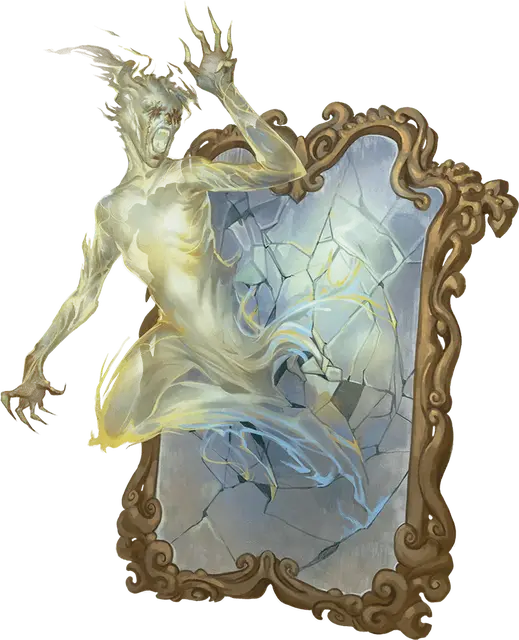

Зеркальная тень
Mirror Shade
Средняя Нежить, обычно хаотично-злая

Класс Доспеха 13
Хиты 91 (14к8 + 28)
Скорость 40 футов
| мод | спас | ||
|---|---|---|---|
| СИЛ | 8 | −1 | −1 |
| ЛОВ | 17 | +3 | +7 |
| ТЕЛ | 14 | +2 | +2 |
| мод | спас | ||
|---|---|---|---|
| ИНТ | 10 | +0 | +0 |
| МДР | 13 | +1 | +5 |
| ХАР | 18 | +4 | +4 |
Навыки Обман +8, Скрытность +7
Сопротивление урону кислота, огонь, электричество; дробящий, колющий, рубящий от немагических атак
Иммунитет к урону излучение, психическая энергия, яд
Иммунитет к состояниям захват, испуг, истощение, окаменение, опутанность, ослепление, отравление, паралич, сбивание с ног
Чувства тёмное зрение 60 футов, пассивное Восприятие 11
Опасность 10 (5900 опыта)
Бонус мастерства +4
Особенности
Обманчивая внешность. Если зеркальная тень не движется в начале боя, то она имеет преимущество на бросок инициативы. Более того, если существо не видело движения или действий зеркальной тени, это существо должно преуспеть в проверке Интеллекта (Расследование) Сл 18, чтобы понять, что зеркальная тень не является его собственным отражением.
Зеркальное перемещение. Зеркальная тень может перемещаться по поверхностям прозрачных и отражающих объектов, таких как зеркала, не провоцируя атаки. Она может перемещаться сквозь прозрачные объекты, как если бы они были труднопроходимой местностью.
Действия
Мультиатака. Зеркальная тень совершает две атаки Призрачным ударом, а также использует Отражение страха.
Призрачный удар. Рукопашная атака оружием: +7 к попаданию, досягаемость 5 футов, одно существо. Попадание: 7 (1к8 + 3) урона излучением плюс 7 (2к6) урона психической энергией.
Отражение страха. Зеркальная тень нацеливается на одно существо, которое видит в пределах 60 футов от себя, и проецирует иллюзию его величайшего страха. Цель должна совершить спасбросок Мудрости Сл 16. При провале цель получает 28 (8к6) урона психической энергией и становится испуганной до начала следующего хода зеркальной тени. При успехе существо получает только половину этого урона.
Бонусные действия
Скрытность в зеркалах. Находясь в пределах 5 футов от отражающей поверхности, такой как зеркало, тень может совершить действие Засада.
Описание
«Она отлично взламывала замки, но была ужасно жестока. Когда она попалась плащевику, мы были рады, что больше никогда ее не увидим, но затем, к нашему ужасу, мы повстречали ее вновь.» — Хоупвелл Легконожек, искатель приключений с Побережья мечей.
Когда дух злобного плута или бессердечного негодяя отказывается отправляться в загробный мир, он иногда становится зеркальной тенью. Они являются бесплотной нежитью, которая в своем истинном облике выглядит как человекообразные сгустки сияющего света. Чаще всего зеркальные тени встречаются на отражающих поверхностях, таких как зеркала или стекла. Там они легко сливаются с отраженным окружением и ждут подходящего момента, чтобы нанести удар. Зеркальные тени можно встретить по всей мультивселенной, но особенно часто они встречаются на Внешних планах.